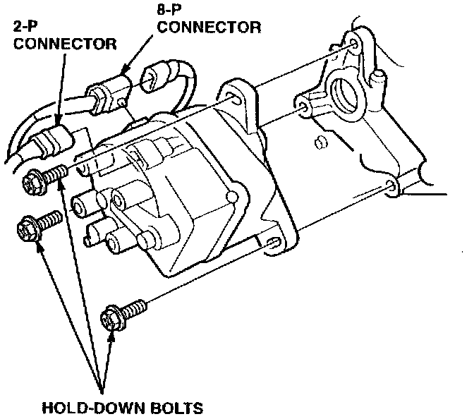
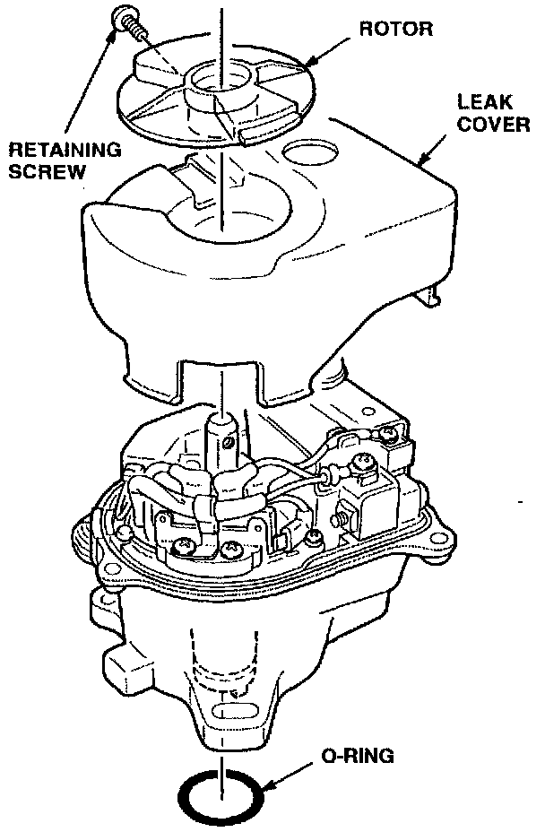
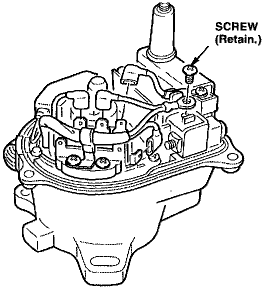
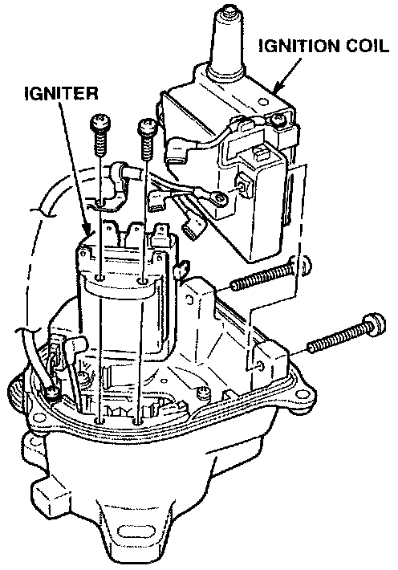
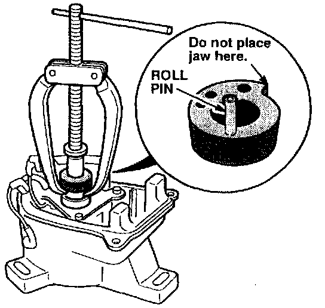
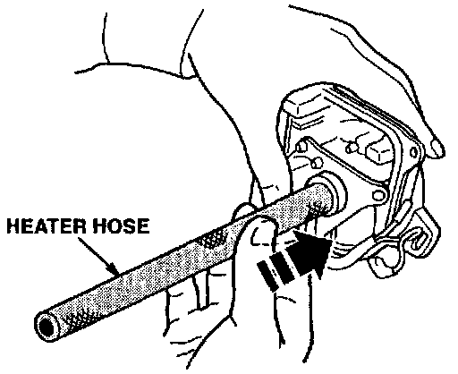
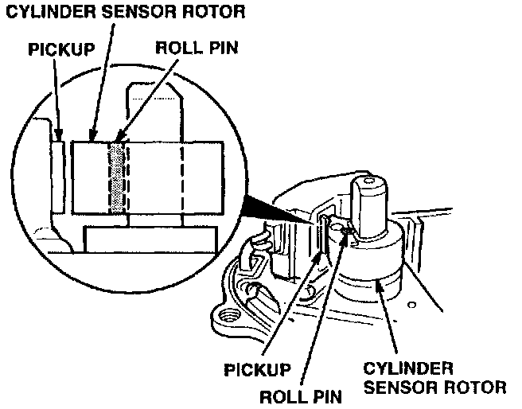
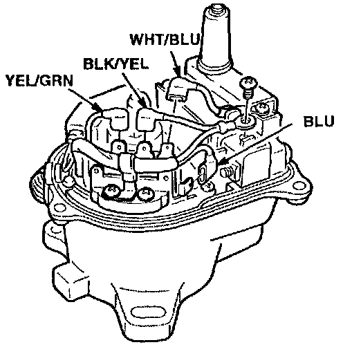
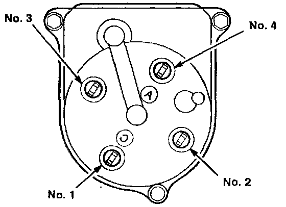

Corrective Action For Region A
Vehicle has more than 30,000 miles. Replace the distributor housing assembly (see PARTS INFORMATION).[NEW] Vehicle has less than 30,000 miles: Pack grease in the distributor shaft bearing, check the bearing, and replace distributor components with the components from the distributor cap kit listed under PARTS INFORMATION.
Repair Procedure
1. Make sure the ignition is off.
2. Remove the two connectors from the bracket behind the distributor.
3. Unplug the distributor 2-P and 8-P connectors.
4. Disconnect the spark plug wires from the distributor cap.

5. Place a shop towel under the distributor to catch any oil that drips. Remove the three distributor hold-down bolts. Remove the distributor from the car.
6. Remove the distributor cap. If the vehicle has more than 30,000 miles, keep the distributor cap for later installation.

7. Remove the retaining screw then remove the rotor. Remove the leak cover. Remove the distributor-to-cylinder head 0-ring. Do not discard the leak cover and rotor. They will be needed for reassembly.

8. Use a Phillips screwdriver to disconnect the BLK/YEL wire from the ignition coil. Disconnect all four wires from the igniter. Take care that you do not damage the wire connectors or lose the screw you will need to reuse them.

9. Remove the ignition coil and igniter mounting screws. Remove the coil and igniter from the distribution
^ If the vehicle has less than 30,000 miles, continue to step 10 to pack grease in the bearing.
^ If the vehicle has more than 30,000 miles, go to step 18 to replace the distributor housing.

10. Use a two-jaw puller to remove the cylinder sensor rotor from the distributor shaft. Make sure the jaws are placed under the inner part of the rotor and not on the projection. Watch the roll pin on the inside of the rotor next to the shaft. It should slide off with the rotor; if it does not, do not let it fall inside the distributor housing.
11. Use a small punch to remove the roll pin from the cylinder sensor rotor. Discard the roll pin.
12. Cut the corner off the bag of grease that came in the distributor cap kit. Fill the well above the shaft bearing with this grease; distribute it evenly.

13. Use a piece of hose to pack the grease into the bearing. The hose should have an inner diameter of 1/2 inch (12.5 mm) and an outside diameter of 13/16 inch (20.5 mm). A piece of heater bypass hose, P/N 19508-PA6-O10, will work. Make sure the end is cut perfectly square.
14. Inspect the shaft and bearing to verify that all the grease has been forced into the bearing. If not, repeat step 13.
15. Rotate the shaft 10 to 15 revolutions to distribute the grease. [NEW]
16. Place the distributor housing near your ear and listen as you rotate the shaft. [NEW]
^ If you can hear the bearing making a scraping noise, replace the distributor housing (see PARTS INFORMATION) and go to step 18. [NEW]
^ If the bearing is quiet and the shaft turns freely, continue to step 17. (Because of the CKP sensor magnet, you will feel some drag when you rotate the shaft slowly. If you have any doubt about the bearing, compare it to a known-good distributor.) [NEW]

17. Install the cylinder sensor rotor on the shaft. Use a small punch to drive the new roll pin into the rotor. Verify that the rotor is lined up with the pickup and that the roll pin is flush with the top of the rotor.
18. Install the original ignition coil and igniter in the distributor housing with the original screws.

19. Reconnect the wires to the igniter and ignition coil terminals.
20. Install the original leak cover.
^ If the vehicle has less than 30,000 miles, install the rotor, distributor cap, cap seal, and 0-ring from the distributor cap kit.
^ If the vehicle has more than 30,000 miles, install the original rotor, distributor cap, and cap seal.
21. Apply a small amount of clean engine oil to the 0-ring that goes between the distributor and the head. Install the distributor on the head.

22. Install the spark plug wires. Reconnect the 2-P and 8-P connectors. Install the two electrical connectors on the bracket.
23. Set the ignition timing according to the procedure in the service manual.